Introduction
dissmapr is an R package for analysing compositional dissimilarity and biodiversity turnover across spatial gradients. It provides scalable, modular workflows that integrate species occurrence, environmental data, and multi-site compositional turnover metrics to quantify and predict biodiversity patterns. A core feature is the use of zeta diversity, which extends beyond pairwise comparisons to capture shared species across multiple sites - offering deeper insight into community assembly, turnover, and connectivity, for both rare and common species. By incorporating different regression methods within the framework of Multi-Site Generalised Dissimilarity Modelling (MS-GDM), dissmapr enables robust mapping, bioregional classification, and scenario-based forecasting. Designed for flexibility and reproducibility, it supports biodiversity monitoring and conservation planning at landscape to regional scales.
Step-by-Step Workflow
dissmapr implements a structured, reproducible workflow for analysing biodiversity patterns and delineating bioregions. Each function aligns with a specific step in the workflow, guiding users from data acquisition to predictive mapping. The workflow begins with sourcing species occurrence and georeferenced environmental data, followed by data formatting and calculation of compositional turnover using zeta diversity metrics (via the zetadiv package). Multi-Site Generalized Dissimilarity Modelling (MS-GDM) is then applied to model and predict dissimilarity across landscapes. As part of the Dissimilarity Cube in the Biodiversity Building Blocks for Policy project, the outputs and predictions from MS-GDM are classified into spatial clusters of species composition, representing distinct bioregions. The workflow also supports the integration of historical and future climate data to assess shifts in biodiversity and detect emerging, shifting, or dissolving bioregions under global change. This step-by-step structure, mirrored in the accompanying tutorial sections, promotes accessibility, transparency, and ecological insight at multiple spatial and temporal scales.
1. SETUP dissmapr
1.1. Install and load dissmapr
Install and load the dissmapr package from GitHub, ensuring all functions are available for use in the workflow.
# install remotes if needed
# install.packages("remotes")
remotes::install_github("b-cubed-eu/dissmapr")
# Ensure the package is loaded when knitting
library(dissmapr)
# Make sure all the functions are loaded
devtools::load_all()1.2. Load other R libraries
Load core libraries for spatial processing, biodiversity modelling, and visualization required across the dissmapr analysis pipeline.
# Load necessary libraries
library(httr) # HTTP client
library(geodata) # Download geographic data
library(data.table) # Fast large-table operations
library(dplyr) # Data manipulation verbs
library(tidyr) # Tidy data reshaping
library(zoo) # Time series utilities
library(sf) # Vector spatial data
library(terra) # Raster spatial operations
library(tidyterra) # supplies geom_spatraster()
library(zetadiv) # Multi-site dissimilarity modelling
library(ggplot2) # Grammar of graphics
library(viridis) # Perceptual color scales
library(patchwork) # Sequentially build up plots on one page
library(mclust) # Clustering, Classification, and Density Estimation
library(zen4R) # client for the Zenodo REST API
library(purrr) # tidyverse functional-programming toolkit
library(RColorBrewer) # set of colour palettes
# library(clue)1.3. Get species occurrence records using get_occurrence_data()
To contextualise the following steps of the workflow, we use South African butterfly data accessed from GBIF (DOI: 10.15468/dl.jh6maj), as a demonstration case. Ultimately, the choice for the Area of Interest (AoI) and taxa is user-specific. This section demonstrates how to automate the retrieval and pre-processing of biodiversity occurrence data from a GBIF query (stored locally as a .csv file), however the same workflow can ingest other sources as well (see the get_occurrence_data() documentation for details). Data inputs currently supported include:
-
Local databases or
.csvfiles -
URLs or
.zipfiles from the Global Biodiversity Information Facility (GBIF) e.g.https://api.gbif.org/v1/occurrence/download/request/0006880-241024112534372.zip - Future inclusion of GBIF species occurrence cubes. Read the species occurrence cubes in GBIF documentation for full details on creating, customizing and submitting queries for occurrence cubes. Read the b-cubed documentation on specification for species occurrence cubes and their production.
get_occurrence_data() then organises the records by the chosen taxonomic scope and region, returning presence–absence and/or abundance matrices that summarise species co-occurrence records with latitude and longitude coordinates.
load(system.file("extdata", "gbif_butterflies_csv.RData", package = "dissmapr"), envir = knitr::knit_global())
bfly_data = get_occurrence_data(
data = gbif_butterflies_csv,
source_type = 'data_frame'
)
# bfly_data = get_occurrence_data(
# data = system.file("extdata", "gbif_butterflies.csv", package = "dissmapr"),
# source_type = 'local_csv',
# sep = '\t'
# )
# Check results but only a subset of columns to fit in console
dim(bfly_data)
#> [1] 81825 52
str(bfly_data[,c(51,52,22,23,1,14,16,17,30)])
#> 'data.frame': 81825 obs. of 9 variables:
#> $ site_id : int 1 2 3 1 4 5 5 5 5 5 ...
#> $ pa : num 1 1 1 1 1 1 1 1 1 1 ...
#> $ y : num -34.4 -34 -33.9 -34.4 -34.4 ...
#> $ x : num 19.2 18.8 18.4 19.2 18.5 ...
#> $ gbifID : num 9.23e+08 9.23e+08 9.23e+08 9.22e+08 9.22e+08 ...
#> $ verbatimScientificName: chr "Pieris brassicae" "Pieris brassicae" "Papilio demodocus subsp. demodocus" "Mylothris agathina subsp. agathina" ...
#> $ countryCode : chr "ZA" "ZA" "ZA" "ZA" ...
#> $ locality : chr "Hermanus" "Polkadraai Road" "Signal Hill" "Hermanus" ...
#> $ eventDate : chr "2012-10-13T00:00" "2012-11-01T00:00" "2012-10-31T00:00" "2012-10-13T00:00" ...
head(bfly_data[,c(51,52,22,23,1,14,16,17,30)])
#> site_id pa y x gbifID verbatimScientificName countryCode
#> 1 1 1 -34.42086 19.24410 923051749 Pieris brassicae ZA
#> 2 2 1 -33.96044 18.75564 922985630 Pieris brassicae ZA
#> 3 3 1 -33.91651 18.40321 922619348 Papilio demodocus subsp. demodocus ZA
#> 4 1 1 -34.42086 19.24410 922426210 Mylothris agathina subsp. agathina ZA
#> 5 4 1 -34.35024 18.47488 921650584 Eutricha capensis ZA
#> 6 5 1 -33.58570 25.65097 921485695 Drepanogynis bifasciata ZA
#> locality eventDate
#> 1 Hermanus 2012-10-13T00:00
#> 2 Polkadraai Road 2012-11-01T00:00
#> 3 Signal Hill 2012-10-31T00:00
#> 4 Hermanus 2012-10-13T00:00
#> 5 Cape of Good Hope / Cape Point Area, South Africa 2012-10-30T00:00
#> 6 Kudu Ridge Game Lodge 2012-10-23T00:001.4. Format data using format_df()
Use format_df() to standardise and reshape raw biodiversity tables into the long or wide format required by later dissmapr steps. Importantly, this function does not alter the spatial resolution of the original observations - it simply tidies the data by automatically identifying key columns (e.g., coordinates, species, and values), assigning unique site IDs (site_id), renaming or removing columns, and reformatting the data for analysis. Outputs include a cleaned site_obs dataset and site_spp matrix for further processing:
-
site_obs: Simplified table with unique
site_id,x,y,speciesandvaluerecords (long format). - site_spp: Site-by-species matrix for biodiversity assessments (wide format).
Format data into long (site_obs) and wide (site_spp) formats
bfly_result = format_df(
data = bfly_data, # A `data.frame` of biodiversity records
species_col = 'verbatimScientificName', # Name of species column (required for `"long"`)
value_col = 'pa', # Name of value column (e.g. presence/abundance; for `"long"`)
extra_cols = NULL, # Character vector of other columns to keep
format = 'long' # Either`"long"` or `"wide"`. If `NULL`, inferred from `species_col` & `value_col`
)
# Check `bfly_result` structure
str(bfly_result, max.level = 1)
#> List of 2
#> $ site_obs:'data.frame': 79953 obs. of 5 variables:
#> $ site_spp: tibble [56,090 × 2,871] (S3: tbl_df/tbl/data.frame)
# Optional: Create new objects from list items
site_obs = bfly_result$site_obs
site_spp = bfly_result$site_spp
# Check results
dim(site_obs)
#> [1] 79953 5
head(site_obs)
#> site_id x y species value
#> 1 1 19.24410 -34.42086 Pieris brassicae 1
#> 2 2 18.75564 -33.96044 Pieris brassicae 1
#> 3 3 18.40321 -33.91651 Papilio demodocus subsp. demodocus 1
#> 4 1 19.24410 -34.42086 Mylothris agathina subsp. agathina 1
#> 5 4 18.47488 -34.35024 Eutricha capensis 1
#> 6 5 25.65097 -33.58570 Drepanogynis bifasciata 1
dim(site_spp)
#> [1] 56090 2871
head(site_spp[,1:6])
#> # A tibble: 6 × 6
#> site_id x y `Mylothris agathina subsp. agathina` `Pieris brassicae` `Tarucus thespis`
#> <int> <dbl> <dbl> <dbl> <dbl> <dbl>
#> 1 1 19.2 -34.4 1 1 1
#> 2 2 18.8 -34.0 0 1 0
#> 3 3 18.4 -33.9 0 0 0
#> 4 4 18.5 -34.4 0 0 0
#> 5 5 25.7 -33.6 0 0 0
#> 6 6 22.2 -33.6 0 0 0
#### Get parameters from processed data to use later
# Number of species
(n_sp = dim(site_spp)[2] - 3)
#> [1] 2868
# Species names
sp_cols = names(site_spp)[-c(1:3)]
sp_cols[1:10]
#> [1] "Mylothris agathina subsp. agathina" "Pieris brassicae" "Tarucus thespis"
#> [4] "Acraea horta" "Danaus chrysippus" "Papilio demodocus subsp. demodocus"
#> [7] "Eutricha capensis" "Mesocelis monticola" "Vanessa cardui"
#> [10] "Cuneisigna obstans"2. USER-DEFINED REGION AND RESOLUTION
2.1. Define area of interest and grid resolution
Defining the geographic extent and an analysis grid early ensures that all subsequent data extraction, aggregation, and visualisation tasks are carried out within a consistent spatial framework. In this vignette we:
- Load the national boundary of South Africa to set our area of interest (AoI).
- Select a working resolution of 0.5° (≈ 55 km) to balance spatial detail with computational cost.
-
Convert the AoI to a
terravector so that raster operations run efficiently. - Create a blank raster template using the chosen resolution and the AoI’s CRS (Coordinate Reference System).
- Populate the raster with placeholder values (here simply 1).
- Mask the raster to the AoI so that only cells whose centroids fall within South Africa remain.
# 1. Load the national boundary
# The shapefile is shipped with the package for full reproducibility.
rsa = sf::st_read(system.file("extdata", "rsa.shp", package = "dissmapr"))
#> Reading layer `rsa' from data source `D:\Methods\R\myR_Packages\b-cubed-versions\dissmapr\inst\extdata\rsa.shp' using driver `ESRI Shapefile'
#> Simple feature collection with 1 feature and 1 field
#> Geometry type: POLYGON
#> Dimension: XY
#> Bounding box: xmin: 16.45802 ymin: -34.83514 xmax: 32.89125 ymax: -22.12661
#> Geodetic CRS: WGS 84
# 2. Choose a working resolution
# A 0.5‑degree cell size strikes a balance between computational load and
# the spatial resolution at which national‑level biodiversity patterns remain
# interpretable.
res = 0.5 # decimal degrees° (≈ 55 km at the equator)
# 3. Convert the AoI to a 'terra' vector
# 'terra' supports fast raster operations; converting now avoids repeated
# coercion later.
rsa_vect = terra::vect(rsa)
# 4. Initialise a blank raster template
# The template inherits the AoI’s coordinate reference system (CRS) and is
# discretised into equally‑sized cells according to the resolution chosen.
grid = terra::rast(rsa_vect, resolution = res, crs = terra::crs(rsa_vect))
# 5. Populate the raster with placeholder values
# We simply assign the value 1 to every cell; the values themselves are
# irrelevant at this stage—the grid’s geometry is what matters.
values(grid) = 1
# 6. Clip the raster to the AoI
# Any cells whose centroids fall outside the boundary are set to NA, thereby
# restricting subsequent computations to the AoI only.
grid_masked = terra::mask(grid, rsa_vect)
# grid_masked is now a 0.5° lattice clipped to South Africa and will serve as the common spatial denominator for all downstream summaries.2.2. Summarise records by grid centroid using generate_grid()
With the national lattice in place, we can now condense point-level observations to grid cells using generate_grid() to:
- Construct a bounding grid: Expands the extent of input points and tessellates it with square cells of the chosen size (here 0.5°).
-
Allocate a
grid_id: Every record inherits the ID of the cell in which it falls. -
Aggregate user-selected columns within each occupied cell, returning:
-
grid_spp: species counts / abundances. -
grid_spp_pa: the same matrix recoded to presence (1) / absence (0) for binary dissimilarity metrics. -
obs_sum: total observations across the aggregated columns. -
spp_rich: number of columns with a non-zero count (simple species richness).
-
- Compute cell centroids and optional assign mapsheet codes (useful for atlasing projects).
-
Rasterise key layers (
grid_id,obs_sum,spp_rich) for fast map algebra. -
Return four spatial objects ready for further analysis:
-
grid_r: multi-layerSpatRaster -
grid_sf: polygon lattice with centroids & summaries -
grid_spp: abundance table (per cell × species) -
grid_spp_pa: binary presence/absence table (same dimensions asgrid_spp)
-
Because every observation is now referenced to a regular grid, all downstream statistics and graphics are standardised to the same sample area.
# Generate a 0.5° grid summary for the point dataset `site_spp`
grid_list = generate_grid(
data = site_spp, # point data with x/y + species columns
x_col = "x", # longitude column
y_col = "y", # latitude column
grid_size = 0.5, # cell size in degrees
sum_cols = 4:ncol(site_spp), # columns to aggregate * could also use `names(site_spp)[4:ncol(site_spp)]`
crs_epsg = 4326 # WGS84
)
# Inspect the returned list
str(grid_list, max.level = 1)
#> List of 4
#> $ grid_r :S4 class 'SpatRaster' [package "terra"]
#> $ grid_sf :Classes 'sf' and 'data.frame': 1110 obs. of 8 variables:
#> ..- attr(*, "sf_column")= chr "geometry"
#> ..- attr(*, "agr")= Factor w/ 3 levels "constant","aggregate",..: NA NA NA NA NA NA NA
#> .. ..- attr(*, "names")= chr [1:7] "centroid_lon" "centroid_lat" "grid_id" "mapsheet" ...
#> $ grid_spp : tibble [415 × 2,874] (S3: tbl_df/tbl/data.frame)
#> $ grid_spp_pa: tibble [415 × 2,874] (S3: tbl_df/tbl/data.frame)
# (Optional) Promote list items to named objects
grid_r = grid_list$grid_r$grid_id # raster
grid_sf = grid_list$grid_sf # polygons for mapping or joins
grid_spp = grid_list$grid_spp # tabular summary per cell
grid_spp_pa = grid_list$grid_spp_pa # presence/absence summary
# Quick checks
dim(grid_sf) #; head(grid_sf)
#> [1] 1110 8
dim(grid_spp) #; head(grid_spp[, 1:8])
#> [1] 415 2874
dim(grid_spp_pa) #; head(grid_spp_pa[, 1:8])
#> [1] 415 2874grid_spp now serves as the site‑level backbone for modelling (e.g. spatial GLMs) or visualisation (e.g. dot plots), whereas grid_spp_pa slots directly into Jaccard- or Sørensen-based beta-diversity workflows. site_spp retains the raw observation detail for drill‑down analyses.
2.3. Visualise observation density across South Africa
With the grid summaries in hand we can now map the spatial distribution of observation effort. The recipe below layers three geometric objects in a single ggplot2 call:
-
Grid polygons (
grid_sf): Outlined in semi‑transparent grey to give a subtle sense of the analytical lattice without overwhelming the figure. -
Centroid points (
grid_spp): Plotted using longitude/latitude coordinates and symbol attributes that encode sampling intensity. For example, below size & colour are mapped tosqrt(obs_sum). We usesqrt()because a square‑root transform is often preferable when counts span large orders of magnitude as it compresses large values while still highlighting structure among sparsely sampled cells. -
National border (
rsa): Emphasised in solid black to anchor the map in a familiar outline.
A perceptually uniform Viridis palette (option = "turbo") supports colour‑blind accessibility, while theme_minimal() removes visual clutter so the data can speak for themselves.
ggplot() +
# 1. grid polygons as subtle backdrop
geom_sf(data = grid_sf, fill = NA, colour = "darkgrey", linewidth = 0.2, alpha = 0.5) +
# 2. centroids sized/coloured by sampling effort
geom_point(
data = grid_spp,
aes(x = centroid_lon, y = centroid_lat,
size = sqrt(obs_sum),
colour = sqrt(obs_sum)),
alpha = 0.8
) +
# Divergent colour scale
scale_colour_viridis_c(option = "turbo", name = "√ Observations") +
scale_size_continuous(name = "√ Observations", guide = "none") +
# 3. national outline
geom_sf(data = rsa, fill = NA, colour = "black", linewidth = 0.4) +
theme_minimal() +
labs(
title = "Observation density across South Africa (0.5° grid)",
x = "Longitude", y = "Latitude"
)
2.4. Visualise sampling effort and richness
generate_grid() also returns a three-layer SpatRaster (grid_r) whose second and third bands store cell-level metrics:
-
obs_sum: Total observations aggregated across the chosen species columns (units = observation count) -
spp_rich: Number of species (non-zero columns) recorded in the cell (units = unique species count)
The chunk below extracts those two layers, applies a square-root stretch (to dampen the influence of very large counts), and renders them side-by-side with a perceptually uniform turbo palette.
# 1. Extract & stretch the layers
effRich_r = sqrt(grid_list$grid_r[[c("obs_sum", "spp_rich")]])
# 2. Open a 1×2 layout and plot each layer + outline
old_par = par(mfrow = c(1, 2), # multi‐figure by row: 1 row and 2 columns
mar = c(1, 1, 1, 2)) # margins sizes: bottom (1 lines)|left (1)|top (1)|right (2)
for (i in 1:2) {
plot(effRich_r[[i]],
col = viridisLite::turbo(100),
colNA = NA,
axes = FALSE,
main = c("Sampling effort (√obs count)",
"Species richness (√unique count)")[i],
cex.main = 0.8) # ← smaller title)
plot(terra::vect(rsa), add = TRUE, border = "black", lwd = 0.4)
}
par(old_par) # reset plotting parametersThese maps quickly reveal where sampling effort is concentrated and how species richness varies across the landscape—useful diagnostics before any downstream modelling.
3. FETCH UNDERLYING ENVIRONMENTAL DATA
3.1. Generate site by environment matrix using get_enviro_data()
Spatial models are most informative when each sampling unit couples a biological response (in this example, sampling effort and species richness) with the same suite of environmental predictors. get_enviro_data() attaches environmental predictors to each grid cell via a six-stage routine:
-
buffer the analysis lattice,
-
retrieve or read the required rasters,
-
crop them to the buffered extent,
-
extract raster values at every grid-cell centroid,
-
interpolate any missing data gaps, and
- append the finished covariate set to the grid summary.
The subsections below implement this workflow:
-
Download and sample 19 WorldClim bioclim variables: obtains the 5-arc-min (~10 km) WorldClim v2.1, returns
biostack viageodata, crops it, and attaches climate values to every centroid. -
Bind climate, effort, and richness into one raster stack: combines √-scaled effort (
obs_sum), √-scaled richness (spp_rich), and the 19 climate layers into a singleSpatRastaligned to the 0.5° grid. - Inspect the extracted covariates: produces a quick map (e.g. mean annual temperature) and previews the data to verify alignment and plausibility.
-
Assemble a modelling matrix: consolidates coordinates, effort, richness, and all climate predictors into a tidy data frame (
grid_env) ready for statistical modelling. -
Optional >> Reproject centroids for metric-space analyses: converts centroid coordinates from
WGS-84(EPSG:4326) to aAlbers Equal-Areaprojection (EPSG:9822) when analyses require distances in metres.
Download and sample 19 WorldClim bioclim variables
Fetch the 5-arc-min (~10 km) bioclim stack via {geodata} package and attach values to every centroid.
# Retrieve 19 bioclim layers (≈10-km, WorldClim v2.1) for all grid centroids
data_path = "inst/extdata" # cache folder for rasters
enviro_list = get_enviro_data(
data = grid_spp, # centroids + obs_sum + spp_rich
buffer_km = 10, # pad the AOI slightly
source = "geodata", # WorldClim/SoilGrids interface
var = "bio", # bioclim variable set
res = 5, # 5-arc-min ≈ 10 km
grid_r = grid_r, # To set resampling resolution, if necessary
path = data_path,
sp_cols = 7:ncol(grid_spp), # ignore species columns
ext_cols = c("obs_sum", "spp_rich") # carry effort & richness through
)
# Quick checks
str(enviro_list, max.level = 1)
#> List of 3
#> $ env_rast:S4 class 'SpatRaster' [package "terra"]
#> $ sites_sf: sf [415 × 2] (S3: sf/tbl_df/tbl/data.frame)
#> ..- attr(*, "sf_column")= chr "geometry"
#> ..- attr(*, "agr")= Factor w/ 3 levels "constant","aggregate",..: NA
#> .. ..- attr(*, "names")= chr "grid_id"
#> $ env_df : tibble [415 × 24] (S3: tbl_df/tbl/data.frame)
# (Optional) Assign concise layer names for readability
# Find names here https://www.worldclim.org/data/bioclim.html
names_env = c("temp_mean","mdr","iso","temp_sea","temp_max","temp_min",
"temp_range","temp_wetQ","temp_dryQ","temp_warmQ",
"temp_coldQ","rain_mean","rain_wet","rain_dry",
"rain_sea","rain_wetQ","rain_dryQ","rain_warmQ","rain_coldQ")
names(enviro_list$env_rast) = names_env
# (Optional) Promote frequently-used objects
env_r = enviro_list$env_rast # cropped climate stack
env_df = enviro_list$env_df # site × environment data-frame
# Quick checks
env_r
#> class : SpatRaster
#> size : 30, 37, 19 (nrow, ncol, nlyr)
#> resolution : 0.5, 0.5 (x, y)
#> extent : 15.5, 34, -36, -21 (xmin, xmax, ymin, ymax)
#> coord. ref. : lon/lat WGS 84 (EPSG:4326)
#> source(s) : memory
#> names : temp_mean, mdr, iso, temp_sea, temp_max, temp_min, ...
#> min values : 9.779773, 8.977007, 47.10606, 228.9986, 19.92147, -4.110302, ...
#> max values : 24.406433, 18.352308, 64.92966, 653.4167, 36.19497, 12.005042, ...
dim(env_df); head(env_df)
#> [1] 415 24
#> # A tibble: 6 × 24
#> grid_id centroid_lon centroid_lat bio01 bio02 bio03 bio04 bio05 bio06 bio07 bio08 bio09 bio10 bio11 bio12
#> <chr> <dbl> <dbl> <dbl> <dbl> <dbl> <dbl> <dbl> <dbl> <dbl> <dbl> <dbl> <dbl> <dbl> <dbl>
#> 1 1026 28.8 -22.3 21.9 14.5 55.8 425. 32.5 6.44 26.1 26.1 16.1 26.1 16.1 341.
#> 2 1027 29.2 -22.3 21.8 14.5 55.1 430. 32.6 6.30 26.3 26.2 15.9 26.2 15.9 358.
#> 3 1028 29.7 -22.3 22.0 14.2 56.3 396. 32.3 7.15 25.2 26.1 16.6 26.1 16.6 398.
#> 4 1029 30.3 -22.3 22.8 13.9 58.0 359. 32.7 8.79 23.9 26.5 17.8 26.5 17.8 451.
#> 5 1030 30.8 -22.3 23.3 13.9 60.0 332. 33.2 9.97 23.2 26.6 18.7 26.6 18.7 481.
#> 6 1031 31.3 -22.3 24.2 14.2 61.3 326. 34.2 10.9 23.2 27.5 19.7 27.5 19.7 467.
#> # ℹ 9 more variables: bio13 <dbl>, bio14 <dbl>, bio15 <dbl>, bio16 <dbl>, bio17 <dbl>, bio18 <dbl>,
#> # bio19 <dbl>, obs_sum <dbl>, spp_rich <dbl>get_enviro_data() buffered the grid centroids by 10 km, fetched the requested rasters, cropped them, extracted values at each centroid, filled isolated NAs, and merged the results with obs_sum and spp_rich.
3.2. Bind climate, effort, and richness into one raster stack
Fuse the √-scaled sampling‐effort (obs_sum) and richness (spp_rich) layers with the 19 bioclim rasters into a single, co-registered SpatRast. A unified stack ensures that all predictors share the same grid, streamlining downstream map algebra, multivariate modelling, and spatial cross-validation.
# Square-root stretch effort & richness layers (created in Section 7)
# effRich_r = sqrt(effRich_r) # two layers: obs_sum, spp_rich
# Resample climate stack to the 0.5 ° grid and concatenate
env_effRich_r = c(
effRich_r, # effort + richness
resample(env_r, effRich_r) # aligns 19 climate layers
)
# 2. Open a 2×2 layout and plot each layer + outline
old_par = par(mfrow = c(2, 2), # multi‐figure by row: 1 row and 2 columns
mar = c(1, 1, 1, 2)) # margins sizes: bottom (1 lines)|left (1)|top (1)|right (2)
titles = c("Sampling effort (√obs count)",
"Species richness (√unique count)",
"BIO1: Annual Mean Temperature",
"BIO2: Mean Diurnal Temperature Range")
for (i in 1:4) {
plot(env_effRich_r[[i]],
col = viridisLite::turbo(100),
colNA = NA,
axes = FALSE,
main = titles[i],
cex.main = 0.8) # smaller title
plot(terra::vect(rsa), add = TRUE, border = "black", lwd = 0.4)
}
par(old_par) 3.3. Inspect the extracted covariates
Environmental data were linked to grid centroids using get_enviro_data(), now visualise the spatial variation in selected climate variables to check results.
# Make column headers explicit
# names(env_df)[1:5] = c("grid_id","centroid_lon","centroid_lat","obs_sum","spp_rich")
# Simple check of dimensions and first rows
dim(env_df)
#> [1] 415 24
head(env_df[, 1:6])
#> # A tibble: 6 × 6
#> grid_id centroid_lon centroid_lat bio01 bio02 bio03
#> <chr> <dbl> <dbl> <dbl> <dbl> <dbl>
#> 1 1026 28.8 -22.3 21.9 14.5 55.8
#> 2 1027 29.2 -22.3 21.8 14.5 55.1
#> 3 1028 29.7 -22.3 22.0 14.2 56.3
#> 4 1029 30.3 -22.3 22.8 13.9 58.0
#> 5 1030 30.8 -22.3 23.3 13.9 60.0
#> 6 1031 31.3 -22.3 24.2 14.2 61.3
# Quick map of mean annual temperature (√-scaled bubble size)
ggplot() +
geom_sf(data = grid_sf, fill = NA, colour = "darkgrey", alpha = 0.4) +
geom_point(data = env_df,
aes(x = centroid_lon,
y = centroid_lat,
colour = bio01),
shape = 15,
size = 3) +
# scale_size_continuous(range = c(2,6)) +
scale_colour_viridis_c(option = "turbo") +
geom_sf(data = rsa, fill = NA, colour = "black") +
theme_minimal() +
labs(title = "Grid-cell mean annual temperature (√-scaled)",
x = "Longitude", y = "Latitude")
Goal of this plot is to quickly check that the environmental predictors (e.g. bio01 >> mean annual temperature) line up with the 0.5° grid.
3.4. Assemble the modelling matrix grid_env
Compile a site × environment data frame (grid_env) in which each 0.5° cell contributes one row containing centroid coordinates, √-scaled sampling effort, species richness, and the 19 bioclim predictors. The resulting matrix is immediately usable for GLMs, GAMs, machine-learning, ordination, and β-diversity analyses.
# Build the final site × environment table
grid_env = env_df %>%
dplyr::select(grid_id, centroid_lon, centroid_lat,
obs_sum, spp_rich, dplyr::everything())
str(grid_env, max.level = 1)
#> tibble [415 × 24] (S3: tbl_df/tbl/data.frame)
head(grid_env)
#> # A tibble: 6 × 24
#> grid_id centroid_lon centroid_lat obs_sum spp_rich bio01 bio02 bio03 bio04 bio05 bio06 bio07 bio08 bio09 bio10
#> <chr> <dbl> <dbl> <dbl> <dbl> <dbl> <dbl> <dbl> <dbl> <dbl> <dbl> <dbl> <dbl> <dbl> <dbl>
#> 1 1026 28.8 -22.3 3 2 21.9 14.5 55.8 425. 32.5 6.44 26.1 26.1 16.1 26.1
#> 2 1027 29.2 -22.3 41 31 21.8 14.5 55.1 430. 32.6 6.30 26.3 26.2 15.9 26.2
#> 3 1028 29.7 -22.3 10 10 22.0 14.2 56.3 396. 32.3 7.15 25.2 26.1 16.6 26.1
#> 4 1029 30.3 -22.3 7 7 22.8 13.9 58.0 359. 32.7 8.79 23.9 26.5 17.8 26.5
#> 5 1030 30.8 -22.3 6 6 23.3 13.9 60.0 332. 33.2 9.97 23.2 26.6 18.7 26.6
#> 6 1031 31.3 -22.3 107 76 24.2 14.2 61.3 326. 34.2 10.9 23.2 27.5 19.7 27.5
#> # ℹ 9 more variables: bio11 <dbl>, bio12 <dbl>, bio13 <dbl>, bio14 <dbl>, bio15 <dbl>, bio16 <dbl>,
#> # bio17 <dbl>, bio18 <dbl>, bio19 <dbl>3.5. Reproject centroids for metric-space analyses using sf::st_transform() [optional]
Certain analyses (e.g. spatial clustering, variogram modelling) require coordinates in metres rather than degrees. The snippet below converts the centroid layer to an Albers Equal-Area projection.
# Convert the centroid columns to an sf object
centroids_sf = sf::st_as_sf(
grid_env,
coords = c("centroid_lon", "centroid_lat"),
crs = 4326, # WGS-84
remove = FALSE
)
# Reproject to Albers Equal Area (EPSG 9822)
centroids_aea = sf::st_transform(centroids_sf, 9822)
# Append projected X–Y back onto the data-frame
grid_env = cbind(
grid_env,
sf::st_coordinates(centroids_aea) |>
as.data.frame() |>
setNames(c("x_aea", "y_aea")) # rename within the pipeline
)
names(grid_env)
#> [1] "grid_id" "centroid_lon" "centroid_lat" "obs_sum" "spp_rich" "bio01" "bio02"
#> [8] "bio03" "bio04" "bio05" "bio06" "bio07" "bio08" "bio09"
#> [15] "bio10" "bio11" "bio12" "bio13" "bio14" "bio15" "bio16"
#> [22] "bio17" "bio18" "bio19" "x_aea" "y_aea"
head(grid_env[, c("grid_id","centroid_lon","centroid_lat","x_aea","y_aea")])
#> grid_id centroid_lon centroid_lat x_aea y_aea
#> 1 1026 28.75 -22.25004 6392274 -6836200
#> 2 1027 29.25 -22.25004 6480542 -6808542
#> 3 1028 29.75 -22.25004 6568648 -6780369
#> 4 1029 30.25 -22.25004 6656587 -6751682
#> 5 1030 30.75 -22.25004 6744357 -6722482
#> 6 1031 31.25 -22.25004 6831955 -6692770At this point every grid cell has species metrics, climate predictors, and is optionally projected into metre coordinates, all in a single tidy object.
3.6. Diagnose and mitigate collinearity with rm_correlated()
Highly inter-correlated predictors inflate variance, bias coefficient estimates, and complicate ecological inference.rm_correlated() screens the environmental matrix for pairwise correlations that exceed a user-defined threshold (here r > 0.70), then iteratively prunes the variable with the highest average absolute correlation. The routine
- Computes a Pearson (default) Correlation matrix for the supplied columns;
-
Ranks variables by their mean absolute correlation;
-
Discards the worst offender, recomputes the matrix, and repeats until all remaining pairs lie below the threshold;
- Optional >> displays the final Correlation heat-map for visual QC.
The result is a reduced predictor set that retains maximal information while minimising multicollinearity.
# (Optional) Rename BIO
names(env_df) = c("grid_id", "centroid_lon", "centroid_lat", names_env, "obs_sum", "spp_rich")
# Run the filter and compare dimensions
# Filter environmental predictors for |r| > 0.70
env_vars_reduced = rm_correlated(
data = env_df[, 4:23], # drop ID + coord columns
cols = NULL, # infer all numeric cols
threshold = 0.70,
plot = TRUE # show heat-map of retained vars
)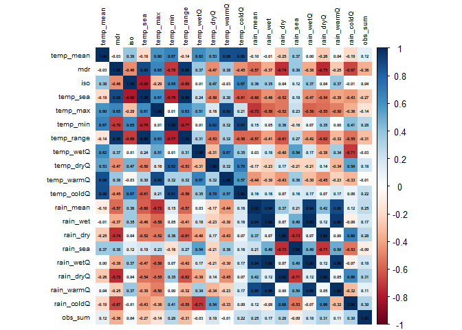
#> Variables removed due to high correlation:
#> [1] "temp_range" "mdr" "temp_sea" "temp_max" "rain_mean" "rain_dryQ" "temp_warmQ" "temp_min"
#> [9] "temp_coldQ" "rain_coldQ" "rain_wetQ" "rain_wet" "rain_sea"
#>
#> Variables retained:
#> [1] "temp_mean" "iso" "temp_wetQ" "temp_dryQ" "rain_dry" "rain_warmQ" "obs_sum"
# Before vs after
c(original = ncol(env_df[, c(4, 6:24)]),
reduced = ncol(env_vars_reduced))
#> original reduced
#> 20 7env_vars_reduced now contains a decorrelated subset of climate predictors suitable for stable GLMs, GAMs, machine-learning, or ordination workflows.
4. ZETA-DIVERSITY
4.1. Zeta diversity in dissmapr for a multi-site view of compositional change
Classical β-diversity evaluates how species composition differs between pairs of sites, but many ecological questions, like how wide-ranging species structure whole landscapes, require a perspective that spans three, four or more assemblages at once. Zeta diversity (ζ-diversity) meets this need by counting the number of species jointly shared by i sites (ζ₁, ζ₂, … ζᵢ). As i increases, ζ declines; the shape of that decline summarises how rarity and commonness are distributed across the region. See Guillaume Latombe (2015). zetadiv: Functions to Compute Compositional Turnover Using Zeta Diversity. R package version 1.3.0, https://cran.r-project.org/web/packages/zetadiv.
`dissmapr` embeds the {zetadiv} toolkit so that automated pipelines of compositional dissimilarity can incorporate higher-order turnover metrics alongside conventional pairwise indices. Four core functions are central:
-
Expectation of ζ-decline using
zetadiv::Zeta.decline.ex(): Calculates the exact mean ζ for successive orders (ζ₁ … ζₖ) when the site × species matrix is small enough for exhaustive enumeration, giving the theoretical baseline against which observed patterns can be compared function details. -
Monte-Carlo ζ-decline using
zetadiv::Zeta.decline.mc(): Uses random subsampling to approximate the same decline in large matrices where exhaustive combinations are infeasible, trading a small sampling error for orders-of-magnitude speed-ups function details. -
ζ distance-decay using
zetadiv::Zeta.ddecays(): Fits a distance–decay curve for several ζ orders simultaneously, revealing how rapidly shared species drop away with spatial separation and whether higher-order overlap is lost faster or slower than pairwise similarity function details. -
Multi-site GDM using
zetadiv::Zeta.msgdm(): Extends Generalised Dissimilarity Modelling to multi-site similarity. For a chosen order i it regresses ζᵢ against environmental gradients and geographic distance using GLMs, GAMs or shape-constrained splines, quantifying how each predictor controls the retention of shared species across landscapes function details.
Why this matters for automated turnover analysis
-
Scale-explicit turnover: ζ-decline distinguishes processes that shape local richness (ζ₁) from those structuring regional overlap (ζ₄, ζ₅ …), adding nuance to the pairwise β view.
-
Process insight: An exponential ζ-decline suggests stochastic assembly while a power-law decline implies niche structure or dispersal limitations.
-
Predictive mapping:
zetadiv::Zeta.msgdm()generates response surfaces for ζᵢ across continuous environmental space, enablingdismaprto project multi-site similarity under current or future scenarios. -
Integrated workflow: Within
dismaprthe outputs (zetadiv::Zeta.decline.*,zetadiv::Zeta.ddecays(),zetadiv::Zeta.msgdm()) slot directly into the same site-by-environment matrices and raster stacks already produced for GLM/GAM pipelines, ensuring a seamless transition from data wrangling to advanced turnover modelling.
In summary, ζ-diversity counts the species that an entire network of sites share. Imagine moving from one natural area to the next across a region. In the first few nearby places most species still overlap, but as you add more, especially those separated by greater distance or harsher conditions, the list of species found everywhere quickly narrows. ζ-diversity tracks how fast that shared list shrinks, highlighting which species are resilient and widespread versus those confined to only a handful of sites. The faster the shared-species list shrinks, the clearer it becomes which species are robust and occur almost everywhere, and which persist only in a few isolated spots. Viewing many sites at once exposes conservation gaps that simple pairwise comparisons can overlook.
The next sections offer a simple, step-by-step guide to spot where shared biodiversity is weakest and direct protection where it’s needed most.
4.2. Expectation curve for ζ-diversity decline using zetadiv::Zeta.decline.ex()
zetadiv::Zeta.decline.ex() calculates the theoretical number of species that should be shared by 1, 2, … k sites (orders 1–15 here) using a closed-form formula based solely on each species’ occupancy frequency. Because no resampling is involved, the output is an exact expectation of how ζ-diversity ought to fall as more sites are considered, assuming site identity plays no role. The function also fits exponential and power-law models to the expected curve, yielding parameters and fit statistics that provide a baseline against which observed or Monte-Carlo ζ-decline patterns can be evaluated.
zeta_decline_ex = Zeta.decline.ex(grid_spp_pa[,7:ncol(grid_spp_pa)], # Only species columns
orders = 1:15)
- Panel 1 (Zeta diversity decline): Shows how rapidly species that are common across multiple sites decline as you look at groups of more and more sites simultaneously (increasing zeta order). The sharp drop means fewer species are shared among many sites compared to just a few.
- Panel 2 (Ratio of zeta diversity decline): Illustrates the proportion of shared species that remain as the number of sites compared increases. A steeper curve indicates that common species quickly become rare across multiple sites.
- Panel 3 (Exponential regression): Tests if the decline in shared species fits an exponential decrease. A straight line here indicates that species commonness decreases rapidly and consistently as more sites are considered together. Exponential regression represents stochastic assembly (randomness determining species distributions).
- Panel 4 (Power law regression): Tests if the decline follows a power law relationship. A straight line suggests that the loss of common species follows a predictable pattern, where initially many species are shared among fewer sites, but rapidly fewer are shared among larger groups. Power law regression represents niche-based sorting (environmental factors shaping species distributions).
Interpretation: The near‐perfect straight line in the exponential panel (high R²) indicates that an exponential model provides the most parsimonious description of how species shared across sites decline as you add more sites, which is consistent with a stochastic, memory-less decline in common species. A power law will also fit in broad strokes, but deviates at high orders, suggesting exponential decay is the better choice for these data.
4.3. Empirical ζ-diversity decline via Monte-Carlo using zetadiv::Zeta.decline.mc()
zetadiv::Zeta.decline.mc() estimates how the number of species shared by 1, 2, … k sites drops when exhaustive combinations are impractical. It repeatedly draws random sets of sites (Monte-Carlo sampling), averages the shared-species count for each order, and reports both the mean and its variability. The resulting curve is then fitted with exponential and power-law models, providing parameter estimates and confidence bands that capture real-world turnover while accounting for sampling uncertainty. In other words, a sharp drop in the curve means species change quickly from place to place (communities are unique), while a gentle drop means many species are found in most places (communities are similar).
zeta_mc_utm = Zeta.decline.mc(grid_spp_pa[,-(1:7)], # Different way to get only species columns
# grid_env[, c("centroid_lon", "centroid_lat")], # WGS84 - decimal degrees
grid_env[, c("x_aea", "y_aea")], # AEA - meters
orders = 1:15,
sam = 100, # Sample size
NON = TRUE,
normalize = "Jaccard")
- Panel 1 (Zeta diversity decline): Rapidly declining zeta diversity, similar to previous plots, indicates very few species remain shared across increasingly larger sets of sites, emphasizing strong species turnover and spatial specialization.
- Panel 2 (Ratio of zeta diversity decline): More irregular fluctuations suggest a spatial effect: nearby sites might occasionally share more species by chance due to proximity. The spikes mean certain groups of neighboring sites have higher-than-average species overlap.
- Panel 3 & 4 (Exponential and Power law regressions): Both remain linear, clearly indicating the zeta diversity declines consistently following a predictable spatial pattern. However, the exact pattern remains similar to previous cases, highlighting that despite spatial constraints, common species become rare quickly as more sites are considered.
Interpretation: This result demonstrates clear spatial structuring of biodiversity i.e. species are locally clustered, not randomly distributed across the landscape. Spatial proximity influences which species co-occur more frequently. In general
zetadiv::Zeta.decline.mc()is used for real‐world biodiversity data—both because it scales and because the Monte Carlo envelope is invaluable when ζₖ gets noisier at higher orders.
4.4. ζ-diversity distance-decay (orders 2–8) using zetadiv::Zeta.ddecays()
zetadiv::Zeta.ddecays()measures the drop in shared species as geographic distance increases. In this example it evaluates orders 2 through 8 by first binning site pairs (or groups) into many distance classes, then computing the average number of species they share in each class, and finally fitting an exponential distance-decay model via a generalized linear regression. The function returns the slope and intercept of each fitted curve, goodness-of-fit statistics, and diagnostic plots that together show how quickly multisite similarity breaks down with space at different zeta orders.
# Calculate Zeta.ddecays
zeta_decays = Zeta.ddecays(#grid_env[, c("centroid_lon", "centroid_lat")], # WGS84 - decimal degrees
grid_env[, c("x_aea", "y_aea")], # AEA - meters
grid_spp_pa[,-(1:7)],
sam = 1000, # Sample size
orders = 2:8,
plot = TRUE,
confint.level = 0.95
)
#> [1] 2
#> [1] 3
#> [1] 4
#> [1] 5
#> [1] 6
#> [1] 7
#> [1] 8
This plot shows how zeta diversity (remember, it’s a metric that captures shared species composition among multiple sites) changes with spatial distance across different orders of zeta (i.e., the number of sites considered at once).
- On the x-axis, we have the order of zeta (from 2 to 8).
For example, zeta order 2 looks at pairs of sites, order 3 at triplets, etc.- On the y-axis, we see the slope of the relationship between zeta diversity and distance (i.e., how quickly species similarity declines with distance).
- A negative slope means that sites farther apart have fewer species in common — so there’s a clear distance decay of biodiversity.
- A slope near zero means distance doesn’t strongly affect how many species are shared among sites.
Interpretation: When you look at just two or three sites, distance really matters because sites far apart share far fewer species, so the decay curve is steep. Once you include four or more sites, that curve flattens out: most widespread species still overlap no matter the distance, so spatial separation has little effect. The tighter confidence bands at higher orders show these broader‐scale patterns are more reliable because they average over many sites. In plain terms, rare or localized species drive strong turnover at small scales, but a core of common species holds communities together across larger regions.
4.5. Model drivers of compositional turnover with zetadiv::Zeta.msgdm()
Zeta.msgdm() extends Generalised Dissimilarity Modelling (GDM) from simple pairwise similarity to any order of ζ-diversity. Order 2 is, by definition, the pairwise case as it counts the species shared by two sites. In other words, the results are directly comparable to conventional β-diversity models. The advantage of the ζ framework is that you can raise the order (ζ₃, ζ₄, …) with the same function to reveal higher-order patterns without changing tools.
Here we fit an order-2 model to ask:
- How strongly do climate, geography, or other predictors control the chance that two sites share species?
- How does that control change along each environmental gradient?
Zeta.msgdm() proceeds in three stages:
-
Sampling: draws 1 000 random site pairs (
sam = 1000) to keep computation tractable. -
Normalisation: converts order-2 counts to a Jaccard similarity (
normalize = "Jaccard") so coefficients range between 0 and 1. -
Regression: fits an I-spline MSGDM (
reg.type = "ispline") that separates monotonic environmental effects from Euclidean geographic distance (distance.type = "Euclidean").
The fitted model (zeta2) contains partial I-splines for every predictor (note: higher splines imply stronger turnover per unit change).
# Fit order-2 MSGDM on the presence–absence matrix and reduced covariate set
set.seed(264)
zeta2 = Zeta.msgdm(
grid_spp_pa[,-(1:7)], # species matrix (rows=sites, cols=spp)
env_vars_reduced, # decorrelated environmental variables
# env_vars_reduced[,-7], # without sampling effort included
grid_env[, c("centroid_lon", "centroid_lat")], # longitude & latitude (°)
# grid_env[, c("x_aea", "y_aea")], # longitude & latitude (meters)
sam = 2000,
order = 2,
distance.type = "Euclidean",
normalize = "Jaccard",
reg.type = "ispline"
)
# Extract and plot the fitted I-splines
# splines = Return.ispline(zeta2, env_vars_reduced[,-7], distance = TRUE) # Without sampling effort
splines = Return.ispline(zeta2, env_vars_reduced, distance = TRUE)
Plot.ispline(splines, distance = TRUE)
General Interpretation
- I-spline height: The taller the curve, the more a variable drives species turnover.
- Curve shape: Steep early rises mark thresholds where small environmental changes cause large compositional shifts; flatter tails suggest saturation.
- Distance spline: Shows the residual spatial decay once environmental effects are removed, highlighting dispersal limits or unmeasured factors.
By isolating each driver’s effect, this MSGDM pinpoints which gradients most erode shared biodiversity and where management actions could most effectively slow that loss.
Specific Interpretation: This figure shows the fitted I-splines from a multi-site generalized dissimilarity model (via
zetadiv::Zeta.msgdm), which represent the partial, monotonic relationship between each predictor and community turnover (ζ-diversity) over its 0–1 rescaled range. A few key take-aways:
- Distance (blue asterisks) has by far the largest I-spline amplitude—rising from ~0 at zero distance to ~0.05 at the maximum. That tells us spatial separation is the strongest driver of multi‐site turnover, and even small increases in distance yield a substantial drop in shared species.
- Sampling intensity (
obs_sum, open circles) comes next, with a gentle but steady rise to ~0.045. This indicates that sites with more observations tend to share more species (or, conversely, that incomplete sampling can depress apparent turnover).- Precipitation variables like rain in the warm quarter (
rain_warmQ, squares) and rain in the dry quarter (rain_dry, triangles-down) both show moderate effects (I-spline heights ~0.02–0.03). This means differences in seasonal rainfall regimes contribute noticeably to changes in community composition.- Temperature metrics like mean temperature (
temp_mean, triangles-up), wet‐quarter temperature (temp_wetQ, X’s), dry‐quarter temperature (temp_dryQ, diamonds), and the isothermality index (iso, plus signs) all have very low, almost flat I-splines (max heights ≲0.01). In other words, these thermal variables explain very little additional turnover once you’ve accounted for distance and rainfall.Key point: Spatial distance is the dominant structuring factor in these data i.e. sites further apart share markedly fewer species. After accounting for that, differences in observation effort and, to a lesser degree, seasonal rainfall still shape multisite community similarity. Temperature and seasonality metrics, by contrast, appear to have only a minor independent influence on zeta‐diversity in this landscape.
# Deviance explained summary results
with(summary(zeta2$model), 1 - deviance/null.deviance)
#> [1] 0.2938658
# [1] 0.3733073
# 0.3733073 means that approximately 37% of the variability in the response
# variable is explained by your model. This is relatively low, suggesting that the
# model may not be capturing much of the underlying pattern in the data.
# Model summary results
summary(zeta2$model)
#>
#> Call:
#> glm.cons(formula = zeta.val ~ ., family = family, data = data.tot,
#> control = control, method = "glm.fit.cons", cons = cons,
#> cons.inter = cons.inter)
#>
#> Coefficients:
#> Estimate Std. Error z value Pr(>|z|)
#> (Intercept) -2.09927 0.57679 -3.640 0.000273 ***
#> temp_mean1 0.00000 2.15557 0.000 1.000000
#> temp_mean2 -0.24807 1.08178 -0.229 0.818623
#> temp_mean3 0.00000 1.60213 0.000 1.000000
#> iso1 -0.30889 1.54849 -0.199 0.841888
#> iso2 0.00000 0.89723 0.000 1.000000
#> iso3 0.00000 1.32413 0.000 1.000000
#> temp_wetQ1 0.00000 1.26557 0.000 1.000000
#> temp_wetQ2 -0.26509 0.97371 -0.272 0.785433
#> temp_wetQ3 0.00000 1.39019 0.000 1.000000
#> temp_dryQ1 -0.19613 1.76387 -0.111 0.911462
#> temp_dryQ2 -0.09067 0.96817 -0.094 0.925383
#> temp_dryQ3 0.00000 1.26689 0.000 1.000000
#> rain_dry1 -0.42846 0.76701 -0.559 0.576429
#> rain_dry2 -0.04003 0.87903 -0.046 0.963674
#> rain_dry3 0.00000 1.28032 0.000 1.000000
#> rain_warmQ1 -0.18795 0.93470 -0.201 0.840634
#> rain_warmQ2 0.00000 0.91001 0.000 1.000000
#> rain_warmQ3 0.00000 1.04710 0.000 1.000000
#> obs_sum1 -2.16820 0.53186 -4.077 4.57e-05 ***
#> obs_sum2 0.00000 1.41890 0.000 1.000000
#> obs_sum3 0.00000 1.81529 0.000 1.000000
#> distance1 -0.40166 0.92696 -0.433 0.664794
#> distance2 -0.41374 1.15223 -0.359 0.719536
#> distance3 -0.04255 1.50976 -0.028 0.977516
#> ---
#> Signif. codes: 0 '***' 0.001 '**' 0.01 '*' 0.05 '.' 0.1 ' ' 1
#>
#> (Dispersion parameter for binomial family taken to be 1)
#>
#> Null deviance: 112.158 on 1999 degrees of freedom
#> Residual deviance: 79.199 on 1975 degrees of freedom
#> AIC: 132.64
#>
#> Number of Fisher Scoring iterations: 74.6. Uneven sampling can disguise the true drivers of biodiversity
With sampling effort (obs_sum) included, all sites with lots of records suddenly look far more alike than poorly sampled ones, and the climate curves flatten, and distance drops too.
# Fit order-2 MSGDM on the presence–absence matrix and reduced covariate set
set.seed(123) # set.seed to generate exactly the same random results i.e. sam=100
zeta2_noEff = Zeta.msgdm(
grid_spp_pa[,-(1:7)], # species matrix (rows = sites, cols = spp)
# env_vars_reduced, # decorrelated environmental variables
env_vars_reduced[,-7], # without sampling effort included
grid_env[, c("centroid_lon", "centroid_lat")], # longitude & latitude (°)
# grid_env[, c("x_aea", "y_aea")], # longitude & latitude (meters)
sam = 1000,
order = 2,
distance.type = "Euclidean",
normalize = "Jaccard",
reg.type = "ispline"
)
# Extract and plot the fitted I-splines
splines_noEff = Return.ispline(zeta2_noEff, env_vars_reduced[,-7], distance = TRUE) # Without sampling effort
Plot.ispline(splines_noEff, distance = TRUE)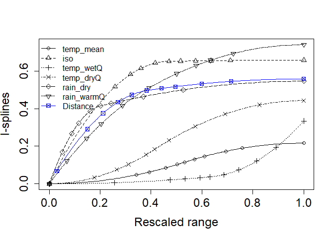
# Deviance explained summary results
with(summary(zeta2_noEff$model), 1 - deviance/null.deviance)
#> [1] 0.08816599
# [1] 0.09495599
# 0.09495599 means that approximately 1% of the variability in the response
# variable is explained by your model. This is relatively low, suggesting that the
# model may not be capturing much of the underlying pattern in the data.
# Model summary results
summary(zeta2_noEff$model)
#>
#> Call:
#> glm.cons(formula = zeta.val ~ ., family = family, data = data.tot,
#> control = control, method = "glm.fit.cons", cons = cons,
#> cons.inter = cons.inter)
#>
#> Coefficients:
#> Estimate Std. Error z value Pr(>|z|)
#> (Intercept) -2.30749 0.71576 -3.224 0.00126 **
#> temp_mean1 0.00000 2.72985 0.000 1.00000
#> temp_mean2 -0.21672 1.53696 -0.141 0.88787
#> temp_mean3 0.00000 2.36184 0.000 1.00000
#> iso1 -0.64639 2.07603 -0.311 0.75553
#> iso2 -0.01169 1.34429 -0.009 0.99306
#> iso3 0.00000 1.69884 0.000 1.00000
#> temp_wetQ1 0.00000 1.60974 0.000 1.00000
#> temp_wetQ2 -0.05815 1.34254 -0.043 0.96545
#> temp_wetQ3 -0.27615 1.87980 -0.147 0.88321
#> temp_dryQ1 0.00000 2.14957 0.000 1.00000
#> temp_dryQ2 -0.44304 1.37079 -0.323 0.74654
#> temp_dryQ3 0.00000 1.72340 0.000 1.00000
#> rain_dry1 -0.38117 1.08562 -0.351 0.72550
#> rain_dry2 -0.16497 1.26607 -0.130 0.89633
#> rain_dry3 0.00000 1.74241 0.000 1.00000
#> rain_warmQ1 -0.36204 1.24736 -0.290 0.77163
#> rain_warmQ2 -0.37857 1.35207 -0.280 0.77948
#> rain_warmQ3 0.00000 1.55813 0.000 1.00000
#> distance1 -0.45944 1.26391 -0.364 0.71622
#> distance2 -0.09850 1.62880 -0.060 0.95178
#> distance3 0.00000 2.50094 0.000 1.00000
#> ---
#> Signif. codes: 0 '***' 0.001 '**' 0.01 '*' 0.05 '.' 0.1 ' ' 1
#>
#> (Dispersion parameter for binomial family taken to be 1)
#>
#> Null deviance: 65.233 on 999 degrees of freedom
#> Residual deviance: 59.482 on 978 degrees of freedom
#> AIC: 106.61
#>
#> Number of Fisher Scoring iterations: 7Without sampling effort (obs_sum) temperature and rainfall curves climb high and fast: climate looks like the main reason sites stop sharing species. Distance (blue line) still matters, but less than several climate variables. Furthermore, when sampling effort is removed the model only explains ≈ 8% of the deviance, compared to 37% when it’s included. In other words, after discounting chance, less than one-tenth of the variation in shared-species counts is captured by climate and distance alone, confirming that survey effort had been the primary driver of the much higher explanatory power in the full model.
Key takeaway: Uneven sampling can hide the real drivers of biodiversity. Without accounting for effort, the model attributes most turnover to climate. Adding effort shows that well-surveyed sites appear more similar simply because thorough searches record more species, while lightly sampled sites miss many and seem distinct. Correcting for effort is essential; only then can we see how climate and distance truly shape species turnover.
5. FULLY AUTOMATED ζ-MSGDM WORKFLOW
5.1. Automated ζ-MSGDM with I-spline Models and Visualization
To streamline the exploration of multi‐site turnover drivers, we now introduce an automated sub-workflow that fits, extracts and visualizes I-spline models for any set of zeta orders in just three function calls. Rather than manually looping over orders, binding tables, and crafting bespoke plots, you can:
-
Run and combine all ispline GLMs via
run_ispline_models(), which:>- Calls
Zeta.msgdm()for each order of interest (e.g. ζ₂…ζ₆) - Extracts both the raw covariates (including geographic distance) and their spline bases
- Returns one tidy tibble tagged by
zOrder, ready for plotting or further analysis
- Calls
-
Inspect partial-dependence curves with
plot_ispline_lines(), which:>- Automatically locates the spline column matching any chosen covariate (e.g. “dist” →
dist_is) - Draws each zeta-order’s I-spline curve with thin lines
- Overlays small markers at user-specified quantiles of the raw predictor and a larger symbol at each curve’s minimum
- Automatically locates the spline column matching any chosen covariate (e.g. “dist” →
-
Summarize overall variation using
plot_ispline_boxplots(), which:- Detects every
_isspline column in your data - Pivots to long format and produces facetted boxplots for each term
- Applies a color-blind–safe Viridis palette with independent scales per facet
- Detects every
By packaging these steps into self-documented functions, we embed ispline modeling and visualization into our RMarkdown workflow with a single, transparent call. The parameters (orders, covariate name, colors, shapes, etc.) are fully customizable, while sensible defaults minimize boilerplate, ensuring reproducibility, readability and ease of maintenance in automated biodiversity turnover analyses.
5.2. Fit and combine ispline models
The following chunk uses our run_ispline_models() helper to fit Zeta.msgdm(reg.type = “ispline”) for orders 2–6, extract both raw covariates (including distance) and their spline bases, and bind everything into one tidy table tagged by zOrder.
# Fit & gather ispline outputs for orders 2:6
set.seed(123) # set.seed to generate exactly the same random results i.e. sam=100
ispline_gdm_tab = run_ispline_models(
spp_df = grid_spp_pa[,-(1:7)],
env_df = env_vars_reduced,
xy_df = grid_env[, c("centroid_lon", "centroid_lat")],
orders = 2:6,
sam = 1000, # Set really low to run fast
normalize = "Jaccard",
reg_type = "ispline"
)
str(ispline_gdm_tab, max.level=1)
#> List of 2
#> $ zeta_gdm_list:List of 5
#> $ ispline_table:'data.frame': 2075 obs. of 17 variables:
ispline_tabs_all = ispline_gdm_tab$ispline_table
head(ispline_tabs_all)
#> temp_mean iso temp_wetQ temp_dryQ rain_dry rain_warmQ obs_sum distance temp_mean_is
#> 1 0.000000000 0.00000000 0.00000000 0.000000000 0.000000000 0.000000000 0 0.02992069 0.000000e+00
#> 2 0.007228375 0.06709322 0.01941640 0.009263111 0.002562338 0.004589507 0 0.02992076 2.606628e-05
#> 3 0.094074777 0.07481225 0.03968812 0.024493796 0.012988982 0.005220299 0 0.02992079 4.415137e-03
#> 4 0.164589610 0.08141449 0.06781475 0.045757693 0.013835167 0.008904397 0 0.02992085 1.351458e-02
#> 5 0.207855825 0.11314906 0.07539076 0.072819805 0.015023675 0.009974474 0 0.04231437 2.155372e-02
#> 6 0.216768580 0.12561452 0.09582285 0.073039544 0.015023675 0.011407648 0 0.04231444 2.344177e-02
#> iso_is temp_wetQ_is temp_dryQ_is rain_dry_is rain_warmQ_is obs_sum_is distance_is zOrder
#> 1 0.00000000 0.000000e+00 0.000000e+00 0.000000000 0.00000000 0 0.06333395 Order2
#> 2 0.02151319 2.988341e-05 7.596014e-05 0.001896652 0.01096718 0 0.06333410 Order2
#> 3 0.02378903 1.248573e-04 5.311096e-04 0.009563608 0.01246634 0 0.06333415 Order2
#> 4 0.02570297 3.645367e-04 1.853533e-03 0.010182243 0.02118262 0 0.06333428 Order2
#> 5 0.03448283 4.505356e-04 4.694302e-03 0.011050239 0.02370168 0 0.08833203 Order2
#> 6 0.03774149 7.278318e-04 4.722675e-03 0.011050239 0.02706660 0 0.08833217 Order25.3. Plot Partial‐Dependence Curves for All Covariates
Here we produce a unified, multi‐panel display of each predictor’s I‐spline partial‐dependence curve using our plot_ispline_lines() helper. That function will:
- Auto‐detect the spline column for each covariate (e.g. “dist” →
dist_is). - Draw a thin line for each zeta‐order.
- Mark selected quantiles along the raw covariate with small symbols.
- Highlight each curve’s minimum value with a larger marker.
We then loop over all raw covariates (those ending in _is), generate a separate plot per variable, and assemble them into a cohesive multi‐panel layout using the patchwork package. This makes it possible to compare turnover responses across the full suite of environmental drivers.
# 1. Identify all raw covariates with a spline term
raw_vars = sub("_is$", "",
grep("_is$", names(ispline_tabs_all), value = TRUE))
# 2. Generate one plot per covariate
plots = lapply(raw_vars, function(var) {
plot_ispline_lines(
ispline_data = ispline_tabs_all,
x_var = var,
orders = paste("Order", 2:6),
cols = c('green','cyan','purple','blue','black'),
shapes = c(15,16,17,18,19)
) +
ggtitle(paste("I-Spline Partial Effect of", var))
})
# 3. Combine into a grid (2 columns here; adjust ncol as needed)
wrap_plots(plots, ncol = 2) +
plot_annotation(
title = "Multi-Panel I-Spline Curves Across Covariates",
theme = theme(plot.title = element_text(size = 16, face = "bold"))
)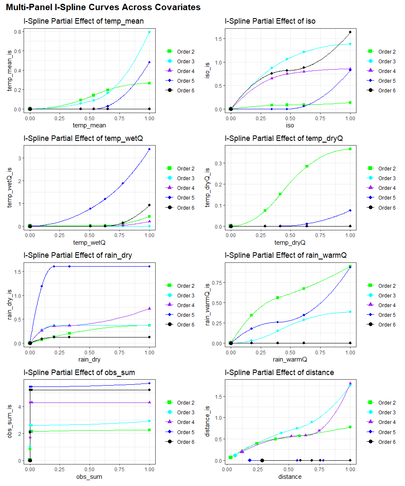
# # Simle single covariate line plot for "dist"
# plot_ispline_lines(
# ispline_data = ispline_tabs_all,
# x_var = "dist",
# orders = paste("Order", 2:6),
# cols = c('green','cyan','purple','blue','black'),
# shapes = c(15,16,17,18,19)
# )Ecological Interpretation and Conservation Implications
- Two-sites: Distance dominates. Shared species drop off steeply as sites become farther apart.
- Three-sites: Isothermality (stable day–night vs. seasonal temperature swings) is most important, suggesting communities in areas with steady daily temperatures stay more similar.
- Four-sites: Mean temperature and wet-quarter temperature have the strongest effects, indicating thermal limits filter species across moderate clusters of sites.
- Five-sites: Sampling effort peaks in influence, warning that uneven survey intensity can masquerade as real ecological turnover at this scale.
- Six-sites: Rainfall variables—especially warm-quarter and dry-season rainfall—become the key filters, showing that moisture availability during extreme seasons governs species overlap in larger site groups.
Key takeaway: At the smallest scale, dispersal barriers (distance) set the stage for which species can overlap. As you expand to three, four or more sites, environmental filters (first thermal, then hydric) sequentially take over. This scale‐dependent shift reveals that different ecological processes dominate community assembly at different spatial extents, with direct implications for how we design surveys and target conservation under changing climates.
5.4. Facetted boxplots of all spline terms
Finally, we summarize the distribution of every _is basis across orders using plot_ispline_boxplots(). Each spline term is facetted with free scales, and fills are mapped to zOrder via a color-blind–friendly Viridis palette.
# Facetted boxplots of all *_is columns
plot_ispline_boxplots(
ispline_data = ispline_tabs_all,
ispline_suffix = "_is",
order_col = "zOrder",
palette = "viridis",
direction = -1,
ncol = 3
)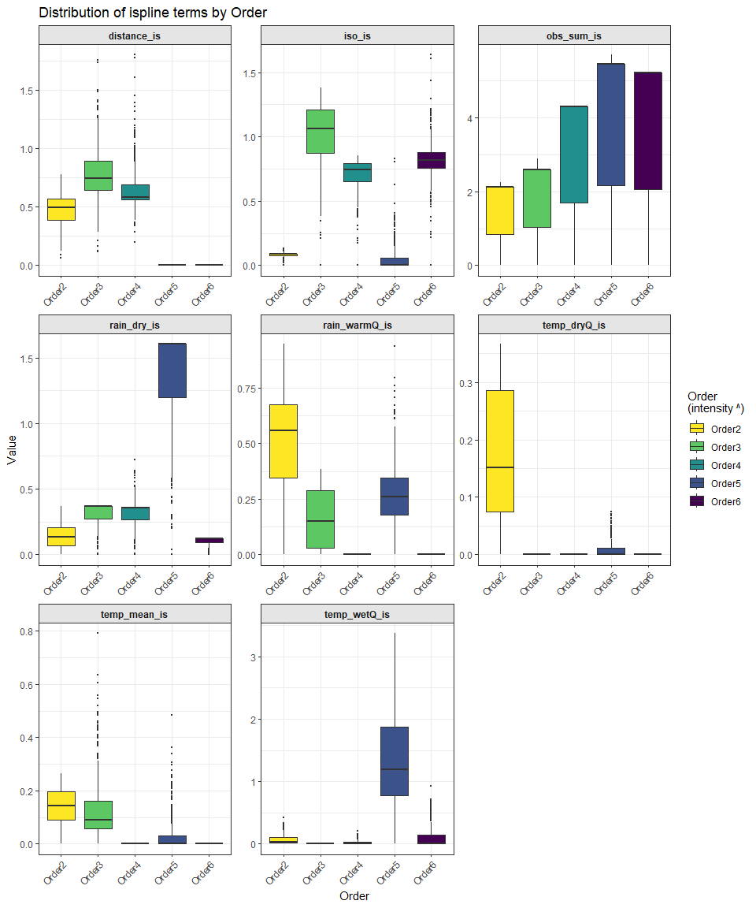
Ecological perspective on shifting predictor influence across ζ-orders: As we step from Order 2 (pairwise similarity) up to Order 6 (overlap among six sites at once) we are effectively widening the spatial lens through which we view community structure. This expansion changes what matters:
- Low orders focus on local contrasts: At Order 2 most variation comes from very fine-scale processes like geographic separation, small environmental mismatches, and sampling effort. These factors explain why two neighbouring grid cells may already differ.
- Intermediate orders integrate the landscape mosaic: By Order 3–4 we are asking “Which species persist across whole clusters of sites?” Now a species must tolerate not just one but several micro-habitats, so meso-scale climatic gradients begin to outweigh sheer distance. Predictors that were trivial at low orders gain influence because they capture the broader ecological envelope required for multi-site coexistence.
- High orders highlight the region-wide common core: At Order 5–6 only the most generalist or widespread species remain shared. Fine-scale distance variation loses power (communities either share the core set or they don’t), while predictors linked to overall habitat suitability and survey completeness dominate. In other words, once you are comparing many sites simultaneously, turnover is governed less by how far sites are apart and more by whether they all fall within the fundamental climatic space of the common species—and whether those species were actually recorded.
Key takeaway: the ecological drivers of compositional overlap are order-dependent because each higher ζ-order filters out another layer of local idiosyncrasy. What emerges is a hierarchy:
- Proximity and micro-heterogeneity dictate similarity between pairs.
- Landscape-scale climate shapes overlap across small clusters.
- Broad climatic envelopes and sampling completeness control the sparse set of species found everywhere.
Recognising this hierarchy helps match conservation or monitoring actions to the scale at which different processes structure biodiversity.
6. PREDICT ZETA DIVERSITY
6.1. Predict current Zeta Diversity (zeta2) using predict_dissim()
In this step we use our fitted order-2 GDM (zeta2) to generate a spatial map of pairwise compositional turnover (ζ₂) under current conditions. predict_dissim() embeds zetadiv::Predict.msgdm() and runs through the following steps:
- Compute each site’s species richness (adjusted by sampling‐effort) and mean distance to all other sites
- Apply the same environmental I-spline transformations used in the model
-
Predict the Jaccard-scaled turnover (ζ₂) on the 0–1 scale
- Optionally plot the resulting heatmap with your study boundary overlaid
We set a random seed for reproducibility (so Monte Carlo sampling inside predict_dissim() yields the same results each time), pull out just the species columns once, then inspect the returned predictors_df to confirm its dimensions, column names, and a quick peek at the key model outputs.
# Predict current zeta diversity using `predict_dissim` with sampling effort, geographic distance and environmental variables
# Only non-colinear environmental variables used in `zeta2` model
set.seed(123) # set.seed to generate exactly the same random results i.e. sam=100
spp_cols = names(grid_spp_pa[,-(1:7)])
predictors_df = predict_dissim(
grid_spp = grid_spp_pa,
species_cols = spp_cols,
env_vars = env_vars_reduced,# env_vars_reduced[,-8]
zeta_model = zeta2, # From simple order 2 run above
# zeta_model = ispline_gdm_tab$zeta_gdm_list[[1]], # From list of Zeta.msgdm models
grid_xy = grid_env,
x_col = "centroid_lon",
y_col = "centroid_lat",
bndy_fc = rsa, # Optional feature collection to plot as boundary
show_plot = TRUE
)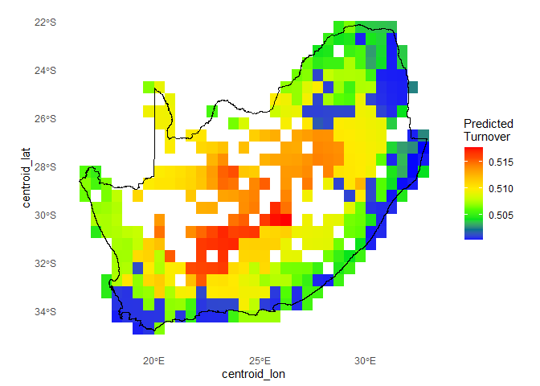
# Check results
dim(predictors_df)
#> [1] 415 14
names(predictors_df)
#> [1] "temp_mean" "iso" "temp_wetQ" "temp_dryQ" "rain_dry"
#> [6] "rain_warmQ" "obs_sum" "distance" "richness" "pred_zeta"
#> [11] "pred_zetaExp" "log_pred_zetaExp" "centroid_lon" "centroid_lat"
head(predictors_df[,5:11])
#> rain_dry rain_warmQ obs_sum distance richness pred_zeta pred_zetaExp
#> 1 -1.227648 -0.17604221 -0.2926985 903.0437 2 0.01930100 0.5048251
#> 2 -1.223151 -0.11642238 -0.2340532 915.4655 31 0.02632131 0.5065799
#> 3 -1.154108 0.06618959 -0.2818954 931.1100 10 0.01570100 0.5039252
#> 4 -1.149209 0.38933728 -0.2865253 949.9390 7 0.01506016 0.5037650
#> 5 -1.080356 0.62285852 -0.2880686 971.8672 6 0.01472191 0.5036804
#> 6 -1.048567 0.57126837 -0.1321955 996.7561 76 0.01438702 0.50359676.2. Predict future Zeta Diversity using predict_dissim()
Below we expand our workflow to forecast how ζ₂ respond to three extreme climate futures (2030, 2040, 2050) alongside the current scenario. First, we define and center-scale each future by adding large temperature increments and rainfall multipliers, then bundle them into a named list of four environmental data frames:
## 1. variable groups
spp_cols = names(grid_spp_pa)[-(1:7)]
all_vars = names(env_vars_reduced)
temp_vars = grep("^temp", all_vars, value = TRUE)
iso_vars = grep("^iso", all_vars, value = TRUE)
rain_vars = grep("^rain", all_vars, value = TRUE)
obs_var = "obs_sum"
## 2. realistic ∆ per horizon
temp_delta = c("2030" = +2, "2040" = +4, "2050" = +6) # °C
iso_delta = c("2030" = +0.5, "2040" = +1.0, "2050" = +1.5) # unitless index
rain_factor = c("2030" = 0.9, "2040" = 0.8, "2050" = 0.7) # × current
# new_obs = max(env_vars_reduced$obs_sum) # Maximum survey effort from current
effort_mult = c("2030" = 1.3, "2040" = 1.6,"2050" = 2.0) # ↑ effort
## 3. original centering / scaling
mu = attr(scale(env_vars_reduced), "scaled:center")
sigma = attr(scale(env_vars_reduced), "scaled:scale")
## 4. build future tables
env_futures = purrr::map(names(temp_delta), function(yr) {
df = env_vars_reduced
## apply the deltas / factors
df[temp_vars] = df[temp_vars] + temp_delta[yr]
df[iso_vars] = df[iso_vars] + iso_delta[yr]
df[rain_vars] = df[rain_vars] * rain_factor[yr]
# df[[obs_var]] = new_obs
df[[obs_var]] = df[[obs_var]] * effort_mult[yr] # preserve spatial pattern but raise mean
## clamp to 50–8000 to avoid absurd values
df[[obs_var]] = pmax(pmin(df[[obs_var]], 8000), 50)
df
})
names(env_futures) = names(temp_delta)
## 5. prepend present-day baseline
env_scenarios = c(list(current = env_vars_reduced), env_futures)
str(env_scenarios, max.level = 1)
#> List of 4
#> $ current: tibble [415 × 7] (S3: tbl_df/tbl/data.frame)
#> $ 2030 : tibble [415 × 7] (S3: tbl_df/tbl/data.frame)
#> $ 2040 : tibble [415 × 7] (S3: tbl_df/tbl/data.frame)
#> $ 2050 : tibble [415 × 7] (S3: tbl_df/tbl/data.frame)Next, we loop through each scenario, re-apply the original centering and scaling, and call our predict_dissim() helper to compute ζ₂. We tag each result with its scenario name and combine them into one tidy data frame:
set.seed(123)
## split → predict → add scenario tag
scenario_dfs <- imap(env_scenarios, ~ {
df_scaled <- sweep(sweep(.x, 2, mu, "-"), 2, sigma, "/") |> as.data.frame()
predict_dissim(
grid_spp = grid_spp_pa,
species_cols = spp_cols,
env_vars = df_scaled,
zeta_model = zeta2,
grid_xy = grid_env,
x_col = "centroid_lon",
y_col = "centroid_lat",
bndy_fc = rsa,
show_plot = FALSE,
skip_scale = TRUE
) |>
mutate(scenario = .y)
})
## bind & set factor levels — use names(env_scenarios) instead of temp_shifts
all_preds <- bind_rows(scenario_dfs) |>
mutate(scenario = factor(scenario,
levels = names(env_scenarios))) # "current", "2030", …
# by(all_preds, all_preds$scenario, summary)
summary(all_preds)
#> temp_mean iso temp_wetQ temp_dryQ rain_dry rain_warmQ
#> Min. :-3.3102 Min. :-2.7172 Min. :-2.83980 Min. :-2.0108 Min. :-1.3115 Min. :-1.6465
#> 1st Qu.: 0.2998 1st Qu.:-0.5280 1st Qu.: 0.03097 1st Qu.:-0.1527 1st Qu.:-0.8556 1st Qu.:-1.0366
#> Median : 1.2700 Median : 0.1940 Median : 0.88709 Median : 0.6070 Median :-0.4122 Median :-0.2986
#> Mean : 1.2854 Mean : 0.2395 Mean : 0.76814 Mean : 0.7004 Mean :-0.2019 Mean :-0.2561
#> 3rd Qu.: 2.2569 3rd Qu.: 1.0005 3rd Qu.: 1.58190 3rd Qu.: 1.4677 3rd Qu.: 0.1728 3rd Qu.: 0.4349
#> Max. : 5.3799 Max. : 3.4535 Max. : 3.30251 Max. : 3.7162 Max. : 4.0169 Max. : 2.4507
#> obs_sum distance richness pred_zeta pred_zetaExp log_pred_zetaExp
#> Min. :-0.29579 Min. :513.2 Min. : 1.00 Min. :0.001154 Min. :0.5003 Min. :-0.6926
#> 1st Qu.:-0.22016 1st Qu.:594.8 1st Qu.: 4.00 1st Qu.:0.014822 1st Qu.:0.5037 1st Qu.:-0.6858
#> Median :-0.22016 Median :675.9 Median : 15.00 Median :0.027757 Median :0.5069 Median :-0.6794
#> Mean : 0.14440 Mean :690.0 Mean : 57.58 Mean :0.027634 Mean :0.5069 Mean :-0.6795
#> 3rd Qu.:-0.03281 3rd Qu.:771.2 3rd Qu.: 76.00 3rd Qu.:0.040202 3rd Qu.:0.5100 3rd Qu.:-0.6732
#> Max. :12.04905 Max. :996.8 Max. :853.00 Max. :0.070791 Max. :0.5177 Max. :-0.6584
#> centroid_lon centroid_lat scenario
#> Min. :16.75 Min. :-34.75 current:415
#> 1st Qu.:22.25 1st Qu.:-31.75 2030 :415
#> Median :26.25 Median :-29.25 2040 :415
#> Mean :25.57 Mean :-29.10 2050 :415
#> 3rd Qu.:29.25 3rd Qu.:-26.75
#> Max. :32.75 Max. :-22.25We can then compare the predicted ζ₂ surfaces under each future scenario:
ggplot(all_preds,
aes(centroid_lon, centroid_lat, fill = pred_zetaExp)) +
geom_tile() +
facet_wrap(~ scenario, ncol = 2) +
scale_fill_viridis_c(direction = -1, name = expression(zeta[2])) +
geom_sf(data = rsa, fill = NA, color = "black", inherit.aes = FALSE) +
coord_sf() +
labs(x = "Longitude", y = "Latitude",
title = expression("Predicted ζ"[2] * " under current & future scenarios")) +
theme_minimal() +
theme(strip.text = element_text(face = "bold"),
panel.grid = element_blank())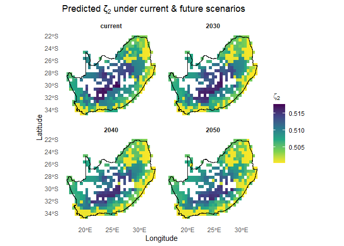
7. MAP COMMUNITY BIOREGIONS
7.1. Run clustering analyses using map_bioreg() to map bioregions
In this step we translate our site‐level ζ₂ predictions into spatial bioregions. A bioregion here is a cluster of grid cells that are both geographically adjacent and compositionally similar i.e. they share a high proportion of species and therefore form a coherent ecological unit at the 0.5 ° resolution. In other words, a bioregion is simply a group of neighbouring grid cells whose plants/wildlife communities look much the same, so we can treat them as one ecologically distinct patch on the map. Calling map_bioreg() on the predictors_df does the following:
- Scales the predicted turnover, longitude and latitude
-
Fits four clustering algorithms (k-means, PAM, hierarchical and GMM)
-
k-meanspartitions points around centroids and is fast for large data sets. -
PAM(Partitioning Around Medoids) is a medoid-based analogue of k-means that is more robust to outliers. -
Hierarchicalagglomerative clustering builds a dendrogram and then “cuts” it at the chosen k, capturing nested structure in the data. -
GMM(Gaussian Mixture Model) treats clusters as multivariate normal distributions and assigns each point by maximum likelihood.
-
- Realigns each method’s cluster labels to the k-means solution for consistency
- Builds both nearest-neighbour and thin-plate-spline interpolated surfaces
-
Returns the raw cluster assignments and gridded rasters, and plots a 2×2 panel of maps (
show_plot=TRUE)
The result is a set of complementary bioregion maps and rasters you can use to compare how different algorithms partition the landscape based on compositional turnover and geography.
7.2. Map current bioregions using map_bioreg()
Mapping present-day bioregions translates ζ-diversity predictions into discrete, spatially coherent units that are easy to visualise and compare. Here we run map_bioreg() on the grid-level ζ₂ surface (predictors_df), scaling turnover and coordinates, and letting four complementary clustering algorithms delineate regions. The function returns both raw cluster assignments and smoothed interpolations, producing a quick 2×2 panel that highlights areas where the different methods agree and/or where biogeographic boundaries are more uncertain.
# Add this to {, fig.width=11.25, fig.height=9, warning=FALSE, message=FALSE}
# Run `map_bioreg` function to generate and plot clusters
bioreg_current = map_bioreg(
data = predictors_df,
scale_cols = c("pred_zetaExp", "centroid_lon", "centroid_lat"),
method = 'all', # Options: c("kmeans","pam","hclust","gmm","all"),
k_override = 8,
interpolate = 'nn', # Options: c("none","nn","tps","all"),
x_col ='centroid_lon',
y_col ='centroid_lat',
res = 0.5,
crs = "EPSG:4326",
plot = TRUE,
bndy_fc = rsa)
#> fitting ...
#> | | | 0% | |======= | 7% | |============== | 13% | |==================== | 20% | |=========================== | 27% | |================================== | 33% | |========================================= | 40% | |================================================ | 47% | |====================================================== | 53% | |============================================================= | 60% | |==================================================================== | 67% | |=========================================================================== | 73% | |================================================================================== | 80% | |======================================================================================== | 87% | |=============================================================================================== | 93% | |======================================================================================================| 100%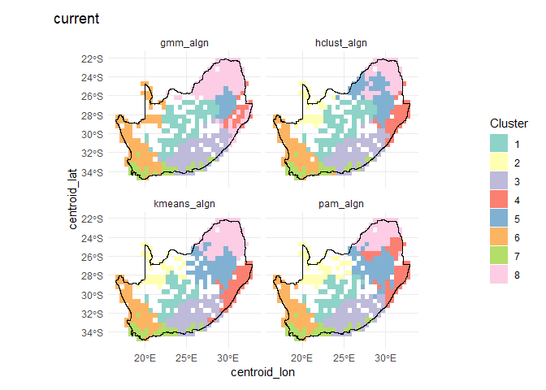
# Check results
str(bioreg_current, max.level=1)
#> List of 6
#> $ none :List of 1
#> $ nn :List of 1
#> $ tps : NULL
#> $ table :'data.frame': 415 obs. of 24 variables:
#> $ plots :List of 1
#> $ methods: chr [1:4] "kmeans" "pam" "hclust" "gmm"7.3. Map future bioregions using map_bioreg()
Below we expand our workflow to map the forecasted ζ₂ bioregions under three extreme climate futures (2030, 2040, 2050) alongside the current scenario. To see how the bioregional partitions shift, we split all_preds by scenario and apply map_bioreg() to each. We then extract the hierarchical cluster layers, mask them to our study area, and plot all four maps in a 2×2 layout. Results shows how predicted turnover patterns and resulting bioregions might shift as climate warms and rainfall changes, highlighting potential future reorganization of biodiversity hotspots.
# Split your combined predictions by scenario into a named list
by_scn = split(all_preds, all_preds$scenario)
# For each scenario, call map_bioreg() with all algorithms
bioreg_future = map_bioreg(
data = by_scn,
scale_cols = c("pred_zetaExp", "centroid_lon", "centroid_lat"),
method = 'all', # Options: c("kmeans","pam","hclust","gmm","all"),
k_override = 8,
interpolate = 'nn', # Options: c("none","nn","tps","all"),
x_col ='centroid_lon',
y_col ='centroid_lat',
res = 0.5,
crs = "EPSG:4326",
plot = TRUE,
bndy_fc = rsa)
#> fitting ...
#> | | | 0% | |======= | 7% | |============== | 13% | |==================== | 20% | |=========================== | 27% | |================================== | 33% | |========================================= | 40% | |================================================ | 47% | |====================================================== | 53% | |============================================================= | 60% | |==================================================================== | 67% | |=========================================================================== | 73% | |================================================================================== | 80% | |======================================================================================== | 87% | |=============================================================================================== | 93% | |======================================================================================================| 100%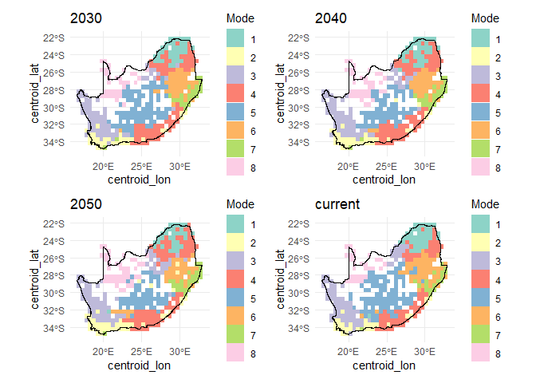
# Check results
str(bioreg_future, max.level=1)
#> List of 6
#> $ none :List of 4
#> $ nn :List of 4
#> $ tps : NULL
#> $ table :'data.frame': 1660 obs. of 24 variables:
#> $ plots :List of 4
#> $ methods: chr [1:4] "kmeans" "pam" "hclust" "gmm"Below we visualise the nearest-neighbour interpolated future‐scenario cluster outputs. First, we list the structure of the bioreg_future result to confirm available components. We then combine the k-means nearest-neighbour rasters for “current” and each future year into a single SpatRaster stack (future_nn), and resample, then mask it to the RSA boundary (mask_future_nn). Finally, we lay out a 2×2 plot grid, compute a discrete colour palette for each layer based on its unique classes, and render each masked layer with its boundary overlay for a quick inspection of bioregion changes across time.
# Check results
str(bioreg_future, max.level=1)
#> List of 6
#> $ none :List of 4
#> $ nn :List of 4
#> $ tps : NULL
#> $ table :'data.frame': 1660 obs. of 24 variables:
#> $ plots :List of 4
#> $ methods: chr [1:4] "kmeans" "pam" "hclust" "gmm"
# Create SpatRast
future_nn = c(bioreg_future$nn$current$kmeans_current,
bioreg_future$nn$`2030`$kmeans_2030,
bioreg_future$nn$`2040`$kmeans_2040,
bioreg_future$nn$`2050`$kmeans_2050)
names(future_nn)
#> [1] "kmeans_current" "kmeans_2030" "kmeans_2040" "kmeans_2050"
# 4) Mask `result_bioregDiff` to the RSA boundary
mask_future_nn = terra::mask(resample(future_nn, grid_masked, method = "mod"), grid_masked)
# 5) Quick visual QC in a 2×2 layout
old_par = par(mfrow = c(2, 2), mar = c(1, 1, 1, 5))
titles = c("Current",
"2030",
"2040",
"2050")
for (i in 1:4) {
## 1. how many distinct classes in this layer?
cls = sort(unique(values(mask_future_nn[[i]])))
cls = cls[!is.na(cls)]
n = length(cls)
## 2. build a discrete palette of n colours
pal = if (n <= 12) {
RColorBrewer::brewer.pal(n, "Set3") # native Set3
} else {
colorRampPalette(brewer.pal(12, "Set3"))(n) # extended Set3
}
## 3. plot
plot(mask_future_nn[[i]],
col = pal,
type = "classes", # treats values as categories
colNA = NA,
axes = FALSE,
legend = TRUE,
main = titles[i],
cex.main = 0.8)
plot(terra::vect(rsa), add = TRUE, border = "black", lwd = .4)
}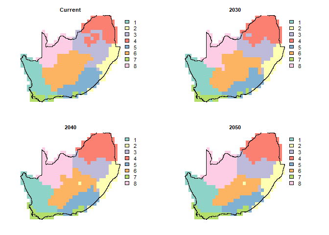
par(old_par)8. MAP BIOREGION SENSITIVITY TO CHANGE
8.1. Sensitivity of bioregion delineation to clustering method using map_bioregDiff()
In the sections below we use map_bioregDiff() to assess how much our four clustering algorithms disagree (a sensitivity check). Here we treat the various cluster maps generated with map_bioreg() as a sensitivity analysis. By feeding all four algorithm outputs into map_bioregDiff(), we quantify where and how much those methods disagree. This shows which areas are robust to algorithm choice and which are method‐dependent.
Change-metric options in map_bioregDiff() include (approach argument):
-
difference_count: counts how many times a cell’s label deviates from the first layer.
-
shannon_entropy: Shannon entropy of the label sequence, a measure of within-cell diversity.
-
stability: proportion of layers in which the label is unchanged (1 = always stable, 0 = always different).
-
transition_frequency: total number of label flips between consecutive layers, showing how often change occurs.
-
weighted_change_index: cumulative change weighted by a dissimilarity matrix so rare or large transitions score higher.
-
all (default): returns a five-layer
SpatRastercontaining every metric.
# Create SpatRast
current_nn = c(bioreg_current$nn$current$kmeans_algn_current,
bioreg_current$nn$current$pam_algn_current,
bioreg_current$nn$current$hclust_algn_current,
bioreg_current$nn$current$gmm_algn_current)
names(current_nn)
#> [1] "kmeans_algn_current" "pam_algn_current" "hclust_algn_current" "gmm_algn_current"
# Run `map_bioregDiff`
# 'approach', specifies which metric to compute:
sens_bioregDiff = map_bioregDiff(
current_nn,
approach = "all"
)
# Inspect the output layers
sens_bioregDiff
#> class : SpatRaster
#> size : 25, 32, 5 (nrow, ncol, nlyr)
#> resolution : 0.5, 0.4999984 (x, y)
#> extent : 16.75, 32.75, -34.75, -22.25004 (xmin, xmax, ymin, ymax)
#> coord. ref. : lon/lat WGS 84 (EPSG:4326)
#> source(s) : memory
#> names : Differ~_Count, Shanno~ntropy, Stability, Transi~quency, Weight~_Index
#> min values : 0, 0.000000, 0, 0, 0.01694915
#> max values : 3, 1.039721, 1, 3, 2.99011299
# Crop to our study area and prepare for plotting
mask_sens_bioregDiff = terra::mask(
terra::resample(sens_bioregDiff, grid_masked, method = "near"),
grid_masked
)
# Quick visual QC in a 3×2 layout
old_par = par(mfrow = c(3, 2), mar = c(1, 1, 1, 5))
titles = c("Difference count", "Shannon entropy", "Stability",
"Transition frequency", "Weighted change index")
for (i in seq_along(titles)) {
plot(mask_sens_bioregDiff[[i]],
col = viridis(100, direction = -1),
colNA = NA,
axes = FALSE,
main = titles[i],
cex.main = 0.8)
plot(terra::vect(rsa), add = TRUE, border = "black", lwd = 0.4)
}
par(old_par)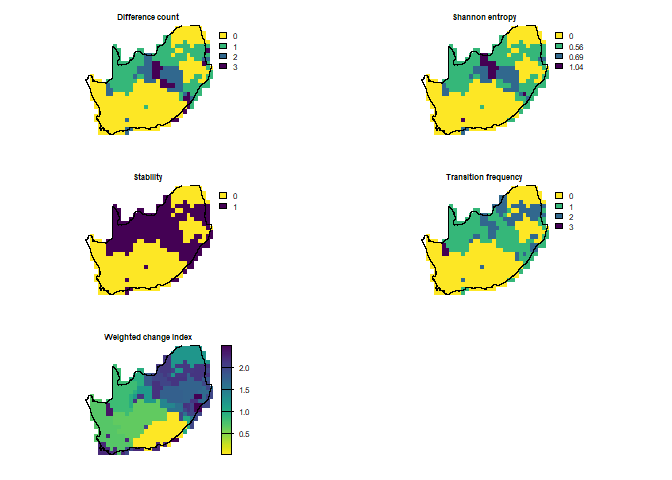
8.2. Map bioregion sensitivity to future change using map_bioregDiff()
Here we use map_bioregDiff() to track how the hierarchical‐cluster map itself changes under three future climate scenarios. Focusing solely on the hierarchical solution we map bioregion change across time. First we stack the hierarchical clusters for today, 2030, 2040 and 2050, run map_bioregDiff() on that series, and highlight how bioregions shift under these future climate projections. In this way we isolate climate-driven reorganization in the hierarchical map itself.
# 1. Build a multi‐layer SpatRaster of hierarchical clusters for each scenario
# Create SpatRast
future_hclt = c(bioreg_future$nn$current$hclust_current,
bioreg_future$nn$`2030`$hclust_2030,
bioreg_future$nn$`2040`$hclust_2040,
bioreg_future$nn$`2050`$hclust_2050)
names(future_hclt)
#> [1] "hclust_current" "hclust_2030" "hclust_2040" "hclust_2050"
# 2. Compute change metrics across those four layers
future_bioregDiff = map_bioregDiff(future_hclt, approach = "all")
# 3. Mask to your RSA boundary (assuming 'grid_masked' is your template)
mask_future_bioregDiff = terra::mask(
terra::resample(future_bioregDiff, grid_masked, method = "near"),
grid_masked
)
# 4. Plot all five metrics in a 3×2 panel
old_par = par(mfrow = c(3, 2), mar = c(1, 1, 1, 5))
titles = c(
"Difference count",
"Shannon entropy",
"Stability",
"Transition frequency",
"Weighted change index"
)
for (i in seq_along(titles)) {
plot(
mask_future_bioregDiff[[i]],
# col = viridisLite::turbo(100),
col = viridis(100, direction = -1),
colNA = NA,
axes = FALSE,
main = titles[i],
cex.main = 0.8
)
plot(terra::vect(rsa), add = TRUE, border = "black", lwd = 0.4)
}
par(old_par)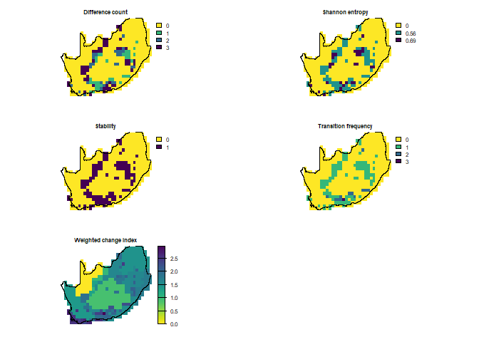
9. SHARE AND DISSEMINATE RESULTS
9.1. Deposit all results into Zenodo
All data frames, tables, maps, and standard metadata can be deposited into Zenodo using zen4R or Zenodo UI. Below is a minimal zen4R workflow showing how to create a new deposition, upload a file, and publish it to Zenodo:
- Make sure
ZENODO_TOKENis set in your environment withdeposit:write(and if plan to publish,deposit:actions) scope. -
createDeposition(),uploadFile(), andpublishDeposition()are all methods of the R6ZenodoManagerobject. - Use
downloadFiles()to pull back any/all files from a given record ID.
NOTE: This will only work if you have an existing Zenodo account. For step‐by‐step guidance on creating and managing your personal access token, consult the official Zenodo Developers documentation under Authentication. For a tutorial on using zen4R to upload (and download) data, see the official zen4R vignette.
# # Install and load zen4R if you haven’t already
# # install.packages("zen4R")
# library(zen4R)
#
# # 1. Authenticate (expects your token in ZENODO_TOKEN)
# token = Sys.getenv("ZENODO_TOKEN")
# zenodo = ZenodoManager$new(token = token)
#
# # 2. Create a new (empty) deposition with basic metadata
# dep = zenodo$createDeposition(
# metadata = list(
# title = "My Example Dataset",
# upload_type = "dataset",
# description = "A demo upload via zen4R",
# creators = list(list(name = "Doe, Jane"))
# )
# )
#
# # 3. Upload your local file into that deposition
# zenodo$uploadFile(deposition = dep, file = "path/to/my_data.csv")
#
# # 4. Publish the deposition (this mints a DOI)
# published = zenodo$publishDeposition(deposition = dep)
# message("Published DOI: ", published$doi)
#
# # 5. Later on: download all files from that record into a folder
# zenodo$downloadFiles(record_id = dep$id, path = "downloads/")